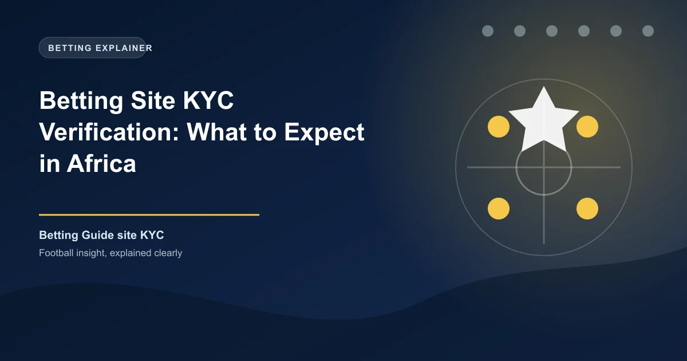

Betting Site KYC Verification: What to Expect in Africa

Every legitimate betting site in Kenya and Nigeria requires KYC (Know Your Customer) verification before you can withdraw your winnings. This isn't a bureaucratic hurdle designed to frustrate you — it's a legal requirement under anti-money laundering (AML) and gambling regulations. Understanding the process helps you complete it quickly and avoid the common issues that delay withdrawals. This guide covers the full process for Betway Kenya, Bet9ja, 22Bet Nigeria, and others.
What Is KYC and Why Is It Required?
KYC (Know Your Customer) is the process of verifying your identity by a betting site. It is required by:
- The Betting Control and Licensing Board (Kenya)
- The National Lottery Regulatory Commission (Nigeria)
- International AML standards (FATF)
Betting sites must verify that you are who you say you are, you are of legal gambling age (18+), and your funds are not from illegal sources.
Documents Required
Primary ID (Mandatory)
- Kenya: National ID card (most common), Kenyan passport
- Nigeria: National ID (NIN), voter's card, driver's license, or international passport
- Accepted formats: Clear photo or scanned copy — all corners visible, no glare, no shadows
Proof of Address
Some sites require a utility bill (electricity, water) or bank statement showing your name and address within the last 3 months. This confirms your residence.
Payment Verification
For withdrawals above a threshold, the site may verify the payment method — photo of your bank card (with middle numbers hidden) or screenshot of your M-Pesa name.
Step-by-Step KYC Process
- Log in to your betting account
- Navigate to Account Settings ? Verify Account or KYC
- Upload clear photos of your National ID (front and back)
- Take a selfie holding your ID — some sites require this to confirm it's you
- Upload proof of address if requested
- Submit and wait for verification — typically 1–24 hours
Common KYC Issues and Fixes
"Document Not Accepted"
Only government-issued IDs are accepted — not student IDs, employee cards, or digital IDs stored on phones. Ensure the ID is valid (not expired).
"Selfie Mismatch"
Take a clear photo of yourself holding the ID — your face must be visible and match the ID photo. Remove glasses, hats, and ensure good lighting.
"Address Proof Too Old"
Utility bills and bank statements must be within 3 months. If your bill is older, download a recent statement from your bank app.
"Account on Hold"
If a site flags your account after large deposits, they may request additional verification. Provide it promptly. This is standard AML compliance, not a scam.
Pro Tip: Complete Verification on Multiple Sites
If you bet across multiple platforms, verify each account upfront. Odds comparison works best when you can withdraw from any site immediately — not when you're waiting for KYC approval on a winning bet.
KYC Limits by Platform
| Verification Level | What You Can Do | Documents Needed |
|---|---|---|
| Unverified | Deposits only, small stakes | Email + phone |
| Basic KYC | Full betting, small withdrawals | National ID |
| Enhanced KYC | Large withdrawals (over KES 100,000 / NGN 500,000) | ID + proof of address + source of funds |
The Bottom Line
KYC verification is mandatory and straightforward — provide a valid government ID and you're done within 24 hours on most platforms. Verify your account immediately after registration so you never face withdrawal delays when you win. If asked for additional documents, provide them promptly with the requested information.
Bet Responsibly
Betting is for entertainment. Only wager what you can afford to lose. For support, visit GamCare.